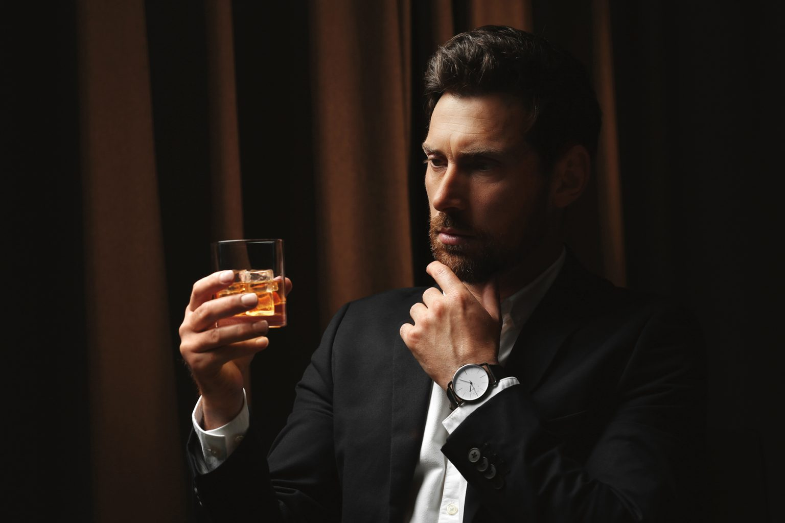

"Контроль – это выбор"
Если вы хотите пить меньше, но не готовы отказываться от алкоголя полностью — вы попали по адресу. КУ — это метод управления употреблением для исключения негативных последствий и сохранением положительных эмоций от алкоголя.

Контролируемое употребление алкоголя (КУ) — это стратегия осознанного управления потреблением без полного отказа. Она подходит людям, которые пьют слишком часто или слишком много, хотят снизить частоту и объем, но не готовы к полной трезвости.
КУ — это не «буду стараться меньше пить». Это система: личные правила, план на неделю, учёт эпизодов, анализ триггеров и срывов. Когда правила установлены заранее, вы перестаёте принимать решение о выпивке каждый вечер заново. Это снижает нагрузку и убирает автоматизм.
КУ подходит вам, если: каждый вечер тянет выпить и это уже привычка; на праздниках или в компании теряете контроль чаще, чем хотелось бы; хотите пить реже и меньше, но не хотите полного отказа; готовы вести учёт и работать по правилам. Если у вас уже есть запои, тремор или утреннее похмеление — начните с врача. КУ — для тех, у кого контроль ещё сохранён.
Сколько можно пить, норма алкоголя, доза с минимальным риском — конкретные цифры для мужчин и женщин
Сколько можно пить →Как меньше пить, как не напиться на праздниках, как перестать пить каждый день — практические инструменты контроля
Как меньше пить →Почему хочется алкоголя, пью от стресса, влияние алкоголя на человека — разбираем причины тяги
Почему хочется алкоголя →Алкогольная зависимость, провалы памяти, похмелье — как не спиться и где граница зависимости
Признаки алкоголизма →Вернуть контроль над алкоголем можно без полного отказа. Наша методика основана на научных публикациях и практическом опыте участников форума.
Подробнее →